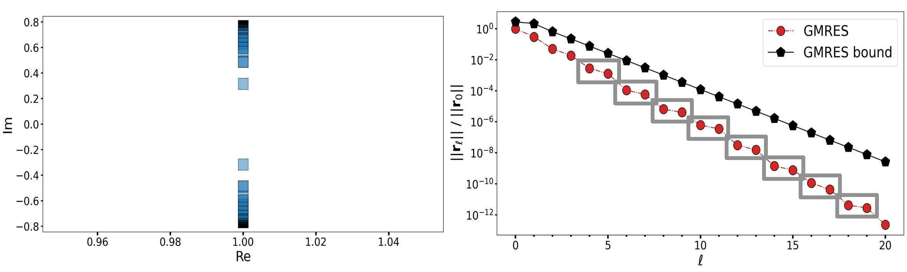
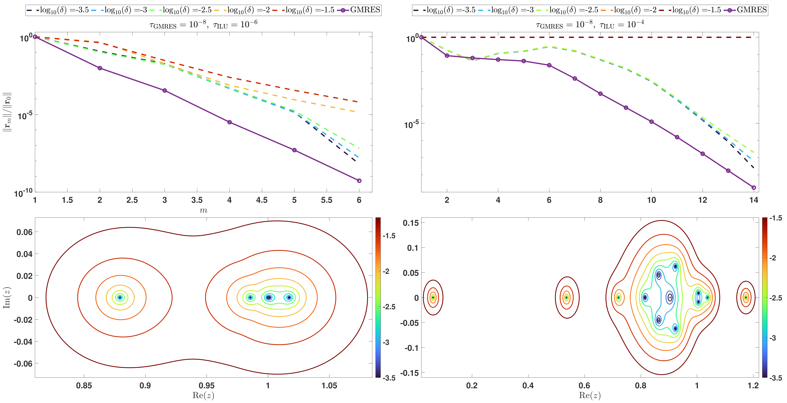
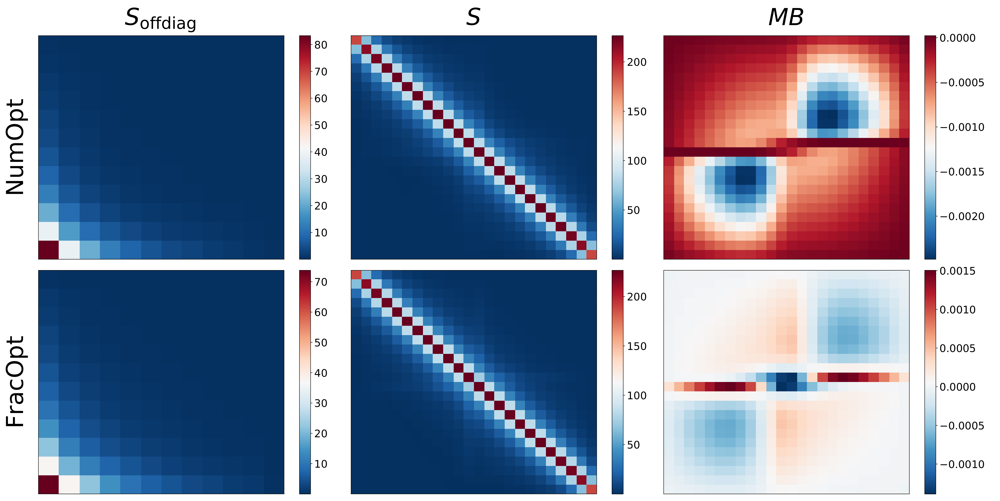
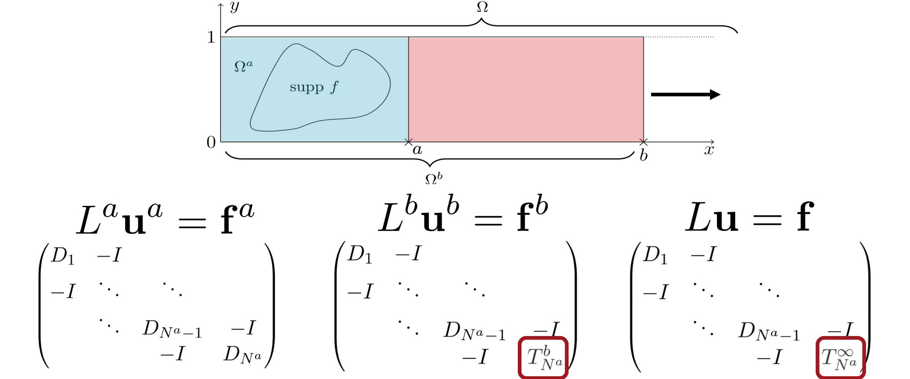
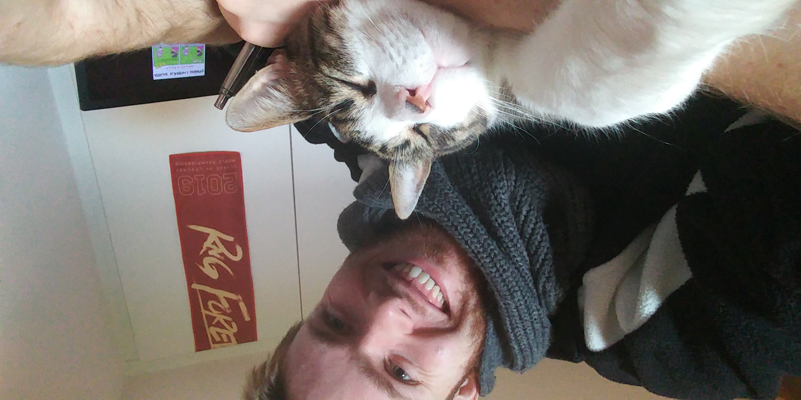

About Me
I am a researcher in numerical linear algebra and connected fields at Virginia Tech (D&DS Building, office 411).
My interest in mathematics began in my family with my granduncle Prof. Jiří Outrata that
introduced me to university-level mathematics and we continued to work together well into my bachelor's years at the Charles University in Prague.
However, in later years of my bachelor studies, the influence of the lecturers and professors shifted my main interest towards the numerical linear algebra
and we agreed with Prof. Zdeněk Strakoš to work on my Bachelor’s thesis together.
At that time I was also offered a position in the research team of Tomáš Gergelits, which allowed me to attend conferences already as a bachelor student.
The summer of 2016 was quite busy as I was awarded the funding to complete a three month summer research internship at the University of Bath and
I also had to defend my Bachelor's thesis immediately after returning. Nevertheless, I enjoyed that summer fully and
started seriously considering the option of working in academia in the future. To make that feasible, I
decided to focus fully on my studies to perform above expectations and make myself more attractive for a future PhD supervisor.
In addition, I decided to broaden my field of interest by pursuing a new topic in my Master’s thesis under the leadership of Prof.
Miroslav Tůma. I kept my dedication and motivation throughout the studies and I graduated summa cum laude in September 2018.
During the final year of my master's studies, I approached Prof. Martin Gander hoping he would have had an open position.
I wrote to him in particular because we met in person at the ALGORITHMY 2015 conference during my bachelor studies.
It was already back then when I knew I would be extremely lucky to ever get a chance to collaborate with him, based on both academical and personal
impression and he kindly offered to lead my PhD studies. I have been thrilled to collaborate with him ever since, and a successfully defended my PhD thesis in Decembre 2022.
Our research project has been awarded and supported by the Swiss Government Excellence Scholarship for three years (maximum possible) out of the four years I spent in Geneva.
I was also awarded the Henri Fehr Prize for the best PhD thesis in mathematics in 2023
and wrote a short summary of the research.
Moving forward, during 2022 I was offered (and hapilly accepted) a postdoc position at Virginia Tech with Prof. Eric de Sturler
as my mentor and I intend to take full advantage of my time here in Blacksburg working with him and other members of the strong applied mathematics group at Virginia Tech.
At the end of 2023 I applied for the open assistant professor position at Charles Univresity in Prague and I am happy to announce I will be starting
at the numerical analysis department in the fall of 2024.
Skills and Languages
• Czech (native) • English (fluent) • French (conversational)
• German (passive) •
• Python • Matlab • LaTeX •
Jupyter •
CV
Available upon request.
Research
Krylov methods • Domain decomposition methods
• Related topics • ORCiD
Krylov methods

I've worked with and on Krylov methods both in Prague and Geneva. My first topic of interest
was GMRES and its convergence behavior and eventually became my Bachelor thesis topic, under the supervision of
Zdeněk Strakoš. The work was an (incomplete) overview of the deep results about GMRES convergence behavior
and we finished by looking on polynomial methods in general on infinite-dimensional spaces and in what sense
we should think about the approximations of the solution and the operators when we discretize and use a Krylov method, e.g., GMRES.
As a result, I obtained a solid theoretical background in theory and analysis of Krylov methods and GMRES in particular.
I continued to be interested in these method and worked on a preconditioner for CG in my Master thesis
with Miroslav Tůma. We focused on problems where the system matrix is dually sparse.
In particular we considered a block matrix with general rectangular block structure such that
considerable amount of the blocks are zero and a lot of the non-zero ones are
data-sparse (i.e., either low-rank or well-approximable by some hierarchical format).
As a result, I learned techniques to deal both with structurally sparse matrices (elimination tree, graph prunning, ...)
as well as with the data-sparse ones, e.g., hierarchical formats (such as HODLR, H, ...) but also low-rank approximation techniques
(CUR approximation, randomized techniques, ...).

With Martin Gander we have looked at the newly proposed block GMRES preconditioner
for systems coming out of implicit Runge-Kutta discretizations of paraboplic PDEs - originaly the work of
Victoria Howle and her group. We tried to understand why does this family of preconditioners
perform the way it does and obtained some non-trivial understanding and analysis.

With Eric de Sturler we have been working on preconditioner maps that allow us to recycle preconditioners
in an efficient way for sequnce of linear problems, using data-sparsity and hierarchical matrix formats.
Domain decomposition methods methods

During my PhD I've transitioned to domain decomposition methods and the Schwarz methods in particular, navigated by
Martin Gander.
We started with optimized Schwarz methods withdata-sparse transmission conditions as a natural progression given my Master's background.
This topic turned out to be very challenging to analyze, especially in contrast to structurally sparse transmission conditions. However the
numerical results are very promising for the standard model problems. This naturally lead to further study of convergence behavior and
convergence bounds in particular for the algebraic formulations of Schwarz methods.

With Martin Gander and
Lukáš Jakabčin we worked on Schur complement approximation qualities,
focusing on the Schur complement on a truncated mesh and its relation to the Schur complement on unbounded domain. In practice, this work is analogous
to studying perfectly matched layers (and the closely related absorbing boundary conditions), thus relating to DD methods in general.
For a simple academical problem, we were able to prove that prolonging the boundary layer corresponds to increasing the degree of a certain Pade approximation,
using continued fraction techniques and representations.
Other
Me and my granduncle Jiří Outrata have done some research in set-valued convex optimization
but I deviated from this line of research already during my bachelor studies in Prague.
Talks and Conferences
Manuscripts and Preprints
Journal Publications • Conference Proceedings •
In Preparation • How To Cite
Peer-reviewed Journal Publications
Peer-reviewed Conference Proceedings
In preparation
How to cite
For your convenience, I'm posting the references for the above I am currently (depending on the last update) using:
the bib items.
Teaching experience
Most of my teaching experience has been truly positive and pleasant as I enjoy interacting
with students. As a teaching assistent (TA) I was in charge (not necessarily solely) of preparing and presenting
the exercises (often heavily inspired by previous runs of the course) and/or correcting these and giving feedback to students.
As a lecturer (L) I was in charge of teaching the course as well as organizing the course, creating the assignments and assessments,
grading them and grading the students.
Undergraduate level
- Introduction to Differential Equations
- Numerical Analysis
- (fr) University of Geneva, Fall 2020 - Fall 2023 (TA for prof. Gilles Vilmart)
- Linear Algebra
- (fr-en) University of Geneva, Fall 2019 (TA for prof. Bart Vandereycken)
- (cz) Charles University in Prague, Fall 2017 (TA for prof. Libor Barto)
- Calculus I
- (fr-en) University of Geneva, Fall 2019 - Fall 2021 (TA for prof. Pavol Ševera)
- (cz) Prague University of Economics and Business, Fall 2016 - Fall 2017 (TA for Dr. Lukáš Krump)
Graduate level
- Maxwell Equations and Scientific Computing
- (fr-en) University of Geneva, Spring 2020 (TA for prof. Martin Gander)
- Low-rank Models in Scientific Simulation and Machine Learning
- (en) University of Geneva, Fall 2019 (TA for prof. Bart Vandereycken)

More about me
The goal of this page is for you (be it a student or a (potential) collaborator) to get
some insight into what I am like outside the academia. If we meet at lunch (or elsewhere),
we could talk about dozen of things completely unrelated to anything written below but maybe
these can serve as humble suggestions.
Currently I'm living with my wife Lea in Blacksburg, Virginia USA.
In my free time I like to do sport activities and I hope to find a nice climbing gym as that has been my preferred sport for some time now.
I used to play florbal as
a goalie back in highschool but also did some handball, baseball, basketball and (beach) volleyball and take part in intramurals regularly in one of these.
I enjoy following cultural and political issues and more general discussions about learning,
thinking and mind, in all of which I have found the podcaster and philosopher Sam Harris
extremely helpful and influential.
From time to time I relax playing games - either with Lea, our friends or on my own. Our/my favourite titles include
Terra Mystica, Puerto Rico, Wingspan, Dominion, Magic The Gathering, Code Names and Dixit but also
Stellaris, It Takes Two, League of Legends or Diablo 2. Me and Lea also like to read and watch together -
we enjoyed the Eragon and also the Wool sagas but we also spent hours watching The Office or Red Dwarf series
or listening to the audiobooks of Terry Prachett.